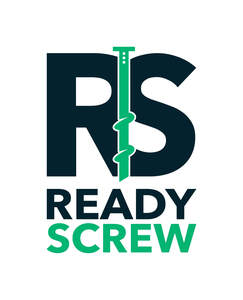

Trade Mark Journal No.2026/007 13 February 2026
UK00004328887 23 January 2026 (6,35,37,41,42)
Mark 1
Mark 2

- Class 6
- Building components of metal for the construction of arches; Fabricated metal components for building foundations; Metal materials for building and construction; Facade construction components of metal.
- Class 35
- Business project management services for construction projects; Providing assistance in the field of business management within the framework of a franchise contract; Retail services in relation to construction equipment.
- Class 37
- Construction of foundations for civil engineering structures; Construction of drainage systems; Construction of foundations for dams; Construction of sewerage systems; Construction of foundations for buildings; Construction of foundations for bridges; Infrastructure construction; General building construction services; Steel structure construction works; Construction of foundations for roads; Construction of civil engineering structures by forming concrete; Construction of civil engineering structures by laying concrete; Temporary structure construction services; Building and construction services; Building construction services; Building construction consultancy; Communications infrastructure construction; Construction project management services; Building construction; Power infrastructure construction; Building construction advisory services; Building inspection [in the course of building construction]; Construction; Building construction and repair; Civil infrastructure construction; Building construction supervision services for building projects; Rail infrastructure construction; Aviation infrastructure construction; Building construction supervision; Supervision (Building construction -); Supervision of building construction; Construction management services; Construction of complexes for business; Custom building construction; Construction of civil engineering structures by pouring concrete; Hydraulic construction services; Building of foundations; Industrial construction; Construction of manufacturing and industrial buildings; Rental of building construction machinery; Construction of healthcare buildings; Building services relating to building for industry purposes; Construction of civil engineering works; Heavy engineering construction; Construction of structures for the production of natural gas; Construction of educational buildings; Building project management services; Building construction and demolition services; Pipeline construction and maintenance; Installation of concrete forming systems; Underwater building and construction; Rental of machines, tools and apparatus for building construction; Rental of construction and building equipment; Construction of institutional buildings; Hiring of construction machinery; Pipeline construction; Construction of multihome buildings; Beneath ground construction work relating to foundation laying; Hiring of construction equipment; Development of land [construction]; Building construction supervision services for real estate projects; Civil engineering underwater construction services; Construction services; Commercial construction; Property development services [construction]; Construction supervision of civil engineering projects; Construction of structures for the transportation of natural gas; Warehouse construction and repair; Services for the construction of buildings; Construction of steel structures for buildings; Erection of formwork for building and construction; Consultation in building construction supervision; Civil engineering construction; Construction of buildings and other structures; Civil engineering [construction] consultancy; Construction consultancy; Construction of exploitation platforms.
- Class 41
- Training in the use of construction machinery.
- Class 42
- Technological research for the building construction industry; Design services for the construction industry; Design of engineered building systems; Research in the field of building construction; Construction design; Engineering services in the field of building technology; Engineering services for the design of structures; Consultancy in the field of architecture and construction drafting; Development of construction projects.
Screw Piling Supplies Ltd